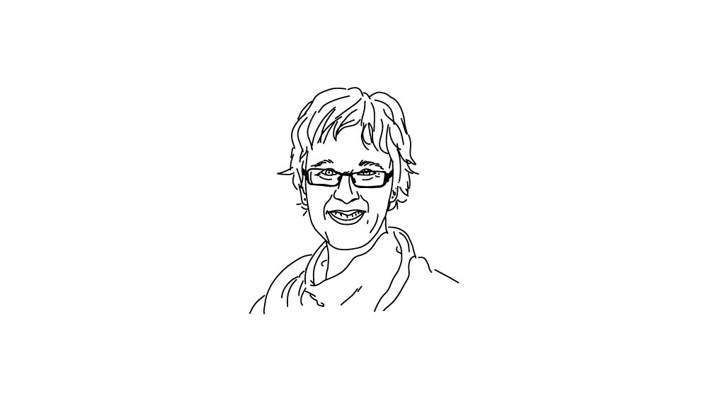
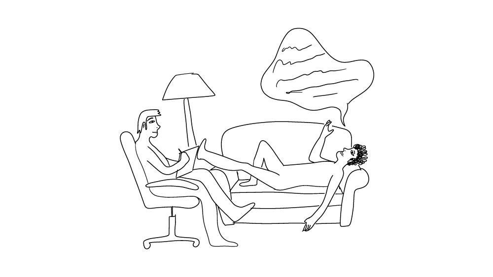
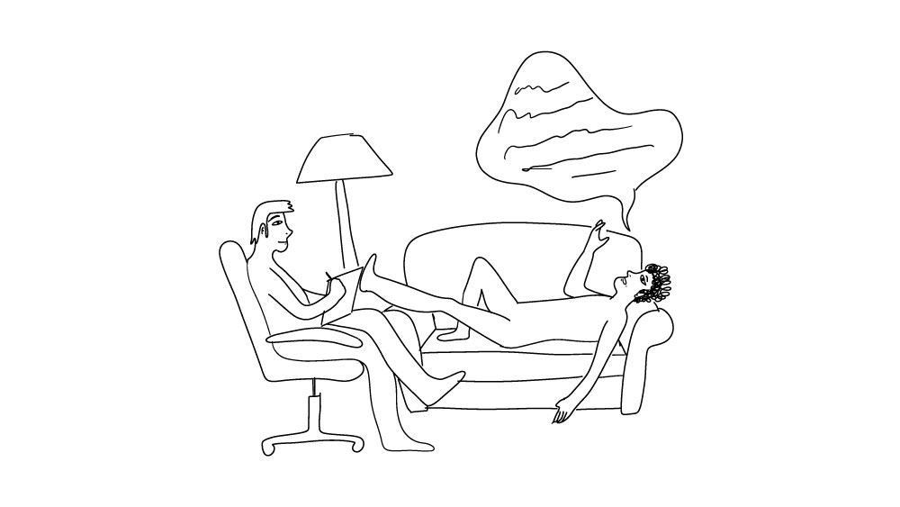

2D animated educational video
This is a short 2D animation illustrating the results of Julia Rucklidge's research on how Micro-Nutrients affect (and treat) our mental health. The animation was made using Adobe Illustrator and After Effects.